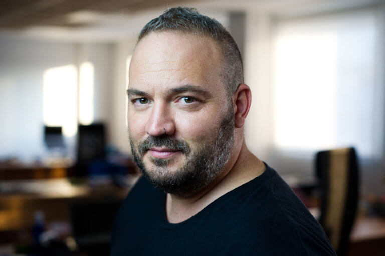

Andrea Barber
Andrea Barber es CEO de Rated Power, una empresa tecnológica cuyo software permite realizar el diseño de plantas fotovoltaicas a gran escala.

Javier de la Torre
Javier de la Torre es fundador y CSO de CARTO, una empresa que se basa en 3 pilares o, mejor dicho, softwares: builder, engine y data observatory.

Rafael Ferrer
Rafael Ferrer es CEO y cofundador de Neki, una startup aragonesa que ha creado el GPS perfecto para las personas mayores.Desde Neki han integrado estos dispositivos de búsqueda en accesorios cotidianos como relojes, pulseras o cinturones.

María López
María López creó Bitbrain, una empresa especializada en neurotecnología que nace como spin-off de un equipo de investigación de la Universidad de Zaragoza.El grupo científico es pionero en aplicaciones de interfaz focalizadas en el campo de la neurotecnología.

Verónica Pascual
Verónica Pascual es la CEO de ASTI, un grupo empresarial basado en ingeniería robótica móvil que estudia, diseña y fabrica soluciones de intralogística automatizada.¡Las últimas tecnologías para mejorar el funcionamiento de una empresa!

Jorge Dobón
Jorge Dobón es el CEO de Demium Startups, una incubadora de empresas que rompe con los modelos tradicionales.Solo el 30% de las startups sobreviven a su primer año de vida, sin embargo desde Demium le ha dado la vuelta a ese porcentaje.

Elena Ibañez
Ella es CEO y fundadora de Singularity Experts, la plataforma focalizada en el empleo y las personas.Singulary Experts se centra en aquellos jóvenes y profesionales que no tienen claro su futuro y están confundidos con la velocidad de la tecnología y automatización de la educación.

Carlota Pi
Ella es Carlota Pi, cofundadora y executive president de Holaluz, una corporación que apuesta por la energía verde. Se trata de la empresa que ofrece energía de origen 100% renovable. Desde Holaluz no buscan revolucionar el sector, sino cambiar el mundo.

Alicia Asín
Alicia Asín, confundadora y CEO de Libelium, es toda una figura referente del llamado IoT (Internet of The Things) o en versión castellana “el internet de las cosas”. En Libelium han creado un ecosistema para que las personas y empresas puedan utilizar IoT en cualquier parte del mundo.
